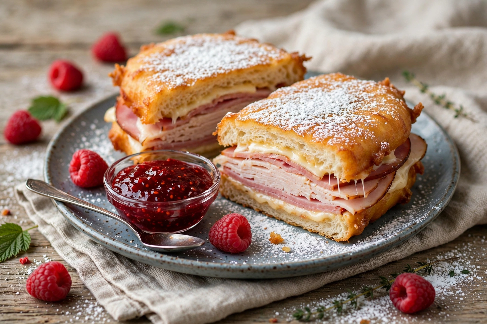

A Monte Cristo sandwich is an egg-dipped or batter-dipped ham and cheese sandwich that is pan-fried or deep-fried. It is an American variation of the French croque monsieur, popular in diners and restaurants, often served dusted with powdered sugar and with jam or maple syrup for dipping.

| Monte Cristo sandwich | |
|---|---|
| Origin | United States |
| Main ingredients | Bread, ham, cheese (Swiss/Gruyère), egg batter |
| Variations | With turkey, chicken; served with jam |
The sandwich appeared in American cookbooks and restaurant menus in the 1930s–1960s under various names. It gained wide fame when Disneyland's Blue Bayou and Cafe Orleans restaurants served a version from 1966 onward. The name alludes to The Count of Monte Cristo by Alexandre Dumas.
Ham (and often turkey) and Swiss cheese are layered between slices of white bread, the whole sandwich is dipped in beaten egg or batter, then fried in butter or oil until golden and the cheese melts. Regional versions range from a light egg dip like French toast to a fully battered, deep-fried sandwich.